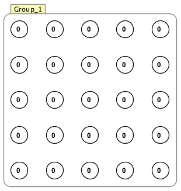
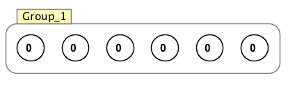
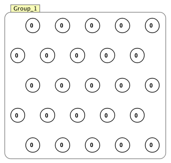

Neuron Layouts
Layouts are used to organize group of neurons in a Simbrain network window. They can be used in several ways
- To arrange a group of loose neurons, by selecting them, and right clicking or using the edit menu to select a layout from the layout menu.
- To specify the layout for a neuron group being created
- To arrange existing neurons in a neuron group.
Note: In each case below, "initial position" corresponnds to the last position clicked on screen, or the upper left corner if no position has been clicked (this is the same as with neurons). Examples of each kind of layout can be found below the pictures below.
Grid Layout
Neurons are laid out in a grid, beginning at an initial position and moving downward.
Horizontal Spacing between neurons: Distance between the neurons from left to right.
Vertical Spacing between neurons: Distance between the neurons up and down.
Manully set number of columns: If checked, the default behavior is overrideen and you can choose how many columns the grid has, using the number of columns field. Default behavior is a square grid.
Number of columns: How many columns there will be in the grid (if manually set number of columns is selected).
Line Layout
Neurons are laid out in a line, beginning at an initial position. 
Layout Style: Whether the neurons are laid out horizontally or vertically.
Spacing between neurons: Distance between the neurons.
Hexagonal Layout

Neurons are laid out in a hexagonal pattern.
Horizontal Spacing between neurons: Distance between the neurons from left to right.
Vertical Spacing between neurons: Distance between the neurons up and down.
Manually set number of columns: If checked, the default behavior is overrideen and you can choose how many columns the grid has, using the number of columns field. Default behavior is a square grid.
Number of columns: How many columns there will be in the grid (if manually set number of columns is selected).